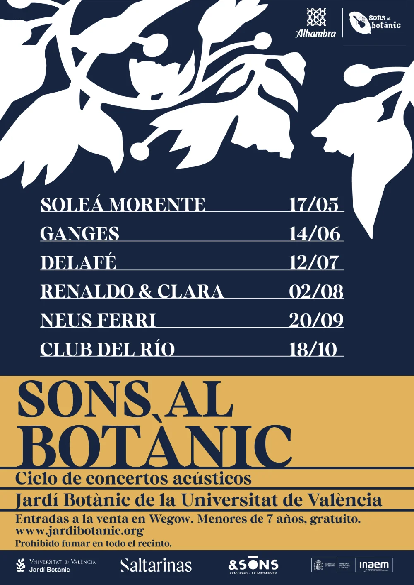

Mucho color y una estética floral
Seis carteles individuales para los conciertos de Sons al Botànic 2024. El formato principal es cuadrado, adaptado a las dimensiones de Instagram de aquel momento. En cuanto al cartel principal (imagen de la derecha), la versión principal fue la adaptada para impresión.
Para diferenciarlo de los carteles individuales, y aunque también emplea dos colores, se optó por un fondo de tono muy oscuro. La composición hace referencia al escenario de Sons al Botànic: las luces superiores frente al fondo oscuro de la noche en el jardín.
